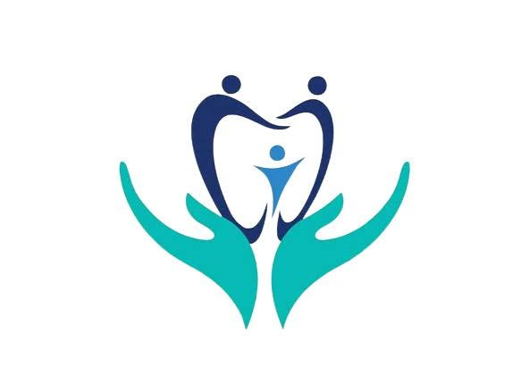

Quét Mã QR Cẩm Nang
Dùng camera điện thoại quét để mở ngay cẩm nang hoặc lưu ra màn hình chính.

Bị cọ má, đâm môi, rơi mắc cài hoặc đau nhức bất thường? Bác sĩ luôn sẵn sàng hỗ trợ bạn.
• Hiện tượng bình thường: Răng bắt đầu nhận lực di chuyển nên sẽ hơi ê ẩm trong 3–5 ngày đầu, sau đó sẽ êm dần.
• Cách xử trí: Ăn đồ mềm, súc miệng nước ấm nhẹ hoặc chườm mát ngoài má. Nếu quá khó chịu, bạn có thể uống 1 viên giảm đau (Paracetamol 500mg) theo hướng dẫn Bác sĩ.
• Chườm mát ngoài má: Dùng khăn bọc đá lạnh áp nhẹ vào má 10–15 phút trong 24–48h đầu giúp co mạch, dịu cơn ê tức rất nhanh.
• Súc miệng nước muối ấm: Pha nước muối ấm nhạt súc miệng 3–4 lần/ngày giúp kháng viêm, làm dịu niêm mạc nướu và vết cọ xát.
• Thư giãn khớp cắn: Tránh nghiến hoặc cắn chặt hai hàm răng vào nhau khi đang ê ẩm để dây chằng cuống răng được nghỉ ngơi.
• Nên ăn: Cháo, súp, cơm mềm, sinh tố, sữa chua, trứng, thịt băm nhỏ hoặc cắt lát mỏng.
• Tuyệt đối tránh: Cắn đồ cứng (xương, sụn, đá viên), đồ dính (kẹo dẻo, kẹo cao su), không dùng răng cửa để cắn xé quả ổi/táo/bánh mì giòn (hãy cắt nhỏ bằng dao trước khi ăn).
1. Lau khô bề mặt mắc cài hoặc đầu dây cung đang bị cọ vào môi/má.
2. Lấy 1 lượng sáp nhỏ bằng hạt đậu xanh, dùng ngón tay vo tròn lại.
3. Ấn nhẹ và miết miếng sáp phủ kín lên vị trí cọ xát (Tháo sáp ra trước khi ăn uống, nếu lỡ nuốt phải sáp cũng hoàn toàn vô hại).
Khi đi học, đi làm hoặc du lịch xa, hãy luôn để sẵn trong túi xách 4 món bất ly thân sau:
Khi cần Bác sĩ kiểm tra sự cố từ xa, hãy dùng 2 ngón tay kéo khóe môi và chụp 3 góc rõ nét sau:
• Bạn hoàn toàn an tâm: Mắc cài, chun chỉnh nha và sáp bảo vệ đều là vật liệu y tế trơ sinh học, bề mặt trơn láng và rất nhỏ.
• Nếu lỡ nuốt phải khi ăn hoặc ngủ, chúng sẽ tự đào thải tự nhiên ra ngoài theo đường tiêu hóa sau 24–48h mà không gây tổn thương hay ngộ độc nào cho cơ thể.
Dùng camera điện thoại quét để mở ngay cẩm nang hoặc lưu ra màn hình chính.